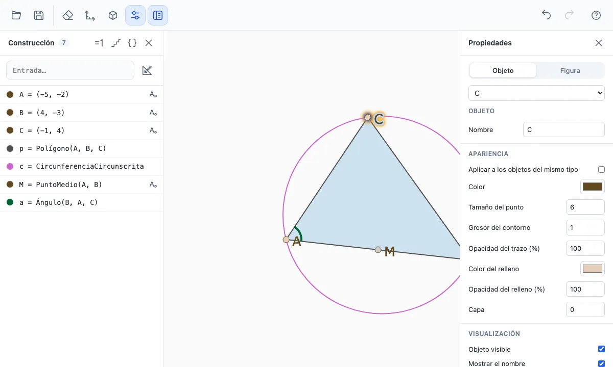
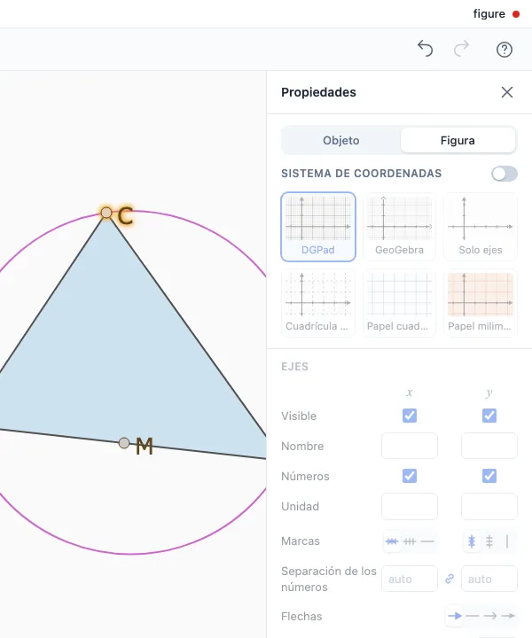

Propiedades y sistema de coordenadas

El panel
- Se abre con o con de la zona contextual; se cierra con su cruz, el mismo botón o Esc.
- Un clic derecho lo abre en cualquier momento sobre lo que señala: un objeto, su nombre o su línea, toda la selección si el objeto forma parte de ella, y la pestaña Figura en un lugar vacío o sobre un eje. La herramienta en uso conserva sus argumentos, y cerrar el panel, por ejemplo con Esc, devuelve la paleta si el panel había ocupado su lugar, con la herramienta aún en uso. Única excepción: durante la definición de una macro, el clic derecho no hace nada.
- Ocupa el lugar de la paleta de herramientas: abrir el panel cierra la paleta, y a la inversa.
- Dos pestañas: Objeto y Figura.
- El objeto que se ajusta se elige en la figura, por su línea o en la lista «Elegir un objeto…» (objetos ocultos incluidos). Un clic en la figura selecciona en lugar de construir; los botones y casillas se seleccionan sin accionarse. Una herramienta de la paleta o la línea de entrada construyen normalmente, y el objeto creado se muestra en el panel. Un lado o un vértice seleccionado de un polígono muestra los ajustes del polígono.
- Los cambios son inmediatos y se pueden deshacer.
- Campos numéricos: arrastrar horizontalmente ajusta el valor (Mayús: diez veces más fino), un clic permite escribirlo. Un arrastre cuenta como un solo paso de deshacer.
- Un botón ↺ junto a un color lo devuelve al que la herramienta da por defecto.
La pestaña «Objeto»
| Sección | Ajustes |
|---|---|
| Objeto | nombre; para un comando o una expresión, su definición |
| Programas | de un punto o de una expresión: su tortuga y sus programas de eventos, en bloques |
| Apariencia | aplicar a los objetos del mismo tipo, color, tamaño del punto, grosor, contorno, opacidades del trazo y del relleno, color del relleno, discontinuo, capa (orden de dibujo) |
| Visualización |
objeto visible, mostrar el nombre, objeto fijo
(polígono), objeto inerte, tamaño del texto,
decimales del valor (o no mostrarlo; en un
texto, las de sus valores
%fórmula%),
visible si, anchura
del campo de entrada
|
| Punto | forma (círculo, cuadrado, cruz, rombo), posición del nombre en grados, rastro, paso horizontal y vertical (desplazamiento a saltos) |
| Segmento | marca (trazos de igual longitud) |
| Ángulo | radio del arco, marca de ángulo recto (escuadra abierta, arco, cuadrado, punto, escuadra) |
| Lugar, lista | número de puntos; grosor de los segmentos |
| Deslizador | incremento, longitud, vertical, color y tamaño del tirador |
| Marco | de una imagen: color, grosor (0: sin marco), opacidad del trazo, discontinuo; su opacidad y su capa siguen en Apariencia |
| Animación | velocidad (0: parada), sentido inverso, en el extremo: volver a empezar, ida y vuelta o detenerse |
Visible si
En la sección Visualización: el nombre de una expresión, una
fórmula (m == 2) o nada. El objeto solo se ve si es
verdadera, y no puede depender del propio objeto.
La línea de una casilla nombra los objetos de los que es condición: añadir un nombre une ese objeto a la casilla, quitarlo lo deja siempre visible. Borrar la casilla conserva esos objetos, siempre visibles.
Colores al crear
Un objeto creado toma el color de su tipo: puntos libres o sobre objeto en naranja, puntos construidos en gris, segmentos rojos, rectas azules, circunferencias verdes, polígonos rellenos de añil… Una figura nueva tiene fondo blanco.
Varios objetos
Con una selección múltiple, solo se muestran los ajustes comunes a todos; un valor que difiere de un objeto a otro aparece en cursiva gris. Ctrl-clic, Mayús-clic o pulsación larga (figura o panel «Construcción») añaden o quitan un objeto.
Objetos inertes
Objeto inerte: el objeto ya no responde al paso del puntero, al clic ni al toque. Ya no se arrastra ni se designa en la figura: el puntero alcanza lo que está debajo. Con el panel de propiedades abierto, ningún objeto es inerte, para poder seleccionarlo y desmarcar la casilla.
La pestaña «Figura»

Un clic en un eje abre esta pestaña.
| Sección | Ajustes |
|---|---|
| Sistema de coordenadas | visible o no; modelos DGPad, GeoGebra, solo ejes, cuadrícula punteada, papel cuadriculado, papel milimetrado (solo apariencia, ni zoom ni fondo) |
| Ejes (x e y) | visible, nombre, números, unidad (π: múltiplos de π/2), marcas, separación de los números (vacío: auto; 🔗 une x e y), flechas, color, tamaño y negrita de los números, estilo DGPad o GeoGebra, semiejes positivos |
| Cuadrícula | visible o no, separación de las líneas, subdivisiones, color (el de los ejes por defecto), grosor, trazo continuo, punteado o discontinuo |
| Zoom y desplazamiento | eje fijo en la pantalla, zoom centrado en el origen |
| Figura | fondo; motivo, una imagen elegida del disco y pintada detrás de toda la figura (↺ la quita), con su disposición: mosaico, mosaico horizontal o vertical, centrado, estirado, rellenar, ajustar; ángulos en grados (por defecto) o radianes; segmentos sobre los polígonos |
En 3D
| Sección | Ajustes |
|---|---|
| Ejes | triedro visible, color, grosor |
| Suelo | visible, color (↺: azul arriba, marrón abajo), opacidad, tamaño, separación, color y grosor de las líneas |
| Vista | perspectiva |
Estos ajustes se pueden deshacer; el zoom, el desplazamiento y la rotación de la vista no.